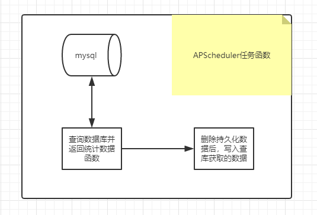

定时修正统计数据
定期进行数据库和持久化缓存数据同步
[TOC]
1. 需求
- 任务要求：
- 对
用户发布总数、用户关注总数数据进行修正- 每天凌晨3天，从数据库中查询并统计数据后，向redis同步，持久化保存
- 该任务要求使用
APScheduler，且以独立进程运行
2. 分析

查询数据库并返回统计数据的函数
- 因为是对持久化的统计数据进行操作，可以放入持久化数据工具类中
删除持久数据后写入查库获取的统计数据函数
- 因为是对持久化的统计数据进行操作，可以放入持久化数据工具类中
定时任务函数调用上述两个函数
3. 按分析步骤完成代码
3.1 完成查询数据库并返回统计数据的函数
在
/common/cache/statustic.py的各个 持久化数据的工具类，创建并完成db_query函数以用户发布总数为例，
count:user:arts中数据格式为zset count:user:arts = [(user_id, count ), (user_id , count ), ...]
向
news_article_basic表查询status=2（通过审核）的所有数据，再根据user_id分组，再分别统计每个user_id有多少个article_id，返回db_query_ret
sqlmysql -uroot -p mysql use toutiao; select news_article_basic.user_id, count(news_article_basic.article_id) from news_article_basic where status=2 group by news_article_basic.user_id;注意：把db_query函数设为静态方法，方便直接调用
- 该函数只是查询数据库并返回，且不需要入参，也用不上其他类属性
参考代码
在
/common/cache/statustic.py中...... from sqlalchemy import func from models.user import Relation from models.news import Article from models import db ...... class UserArticleCountStorage(BaseCountStorage): """用户发布总数工具类""" key = 'count:user:arts' @staticmethod def db_query(): """查询数据库，返回（所有用户发布总数）统计数据 根据user_id向news_article_basic表查询status=2（通过审核）的所有数据， 再根据user_id分组， 再分别统计每个user_id有多少个article_id，返回db_query_ret :return: db_query_ret=[(user_id, count), (user_id, count), (user_id, count), ...] """ # select user_id, count(article_id) from news_article_basic # where status=2 group by user_id # 使用了sqlalchemy.func.count 就必须使用 db.session db_query_ret = db.session.query(Article.user_id, func.count(Article.id)).\ filter(Article.status==Article.STATUS.APPROVED).\ group_by(Article.user_id).all() return db_query_ret class UserFollowingCountStorage(BaseCountStorage): """用户关注总数工具类""" key = 'count:user:following' @staticmethod def db_query(): """查询数据库，返回（所有用户关注总数）统计数据""" # select user_relation.user_id, count(user_relation.target_user_id) # from user_relation # where user_relation.relation=1 group by by user_relation.user_id db_query_ret = db.session.query(Relation.user_id, func.count(Relation.target_user_id)).\ filter(Relation.relation==Relation.RELATION.FOLLOW).\ group_by(Relation.user_id) return db_query_ret
3.2 完成删除持久数据后写入查库获取的统计数据函数
在
/common/cache/statustic.py的BaseCountStorage类中完成reset函数直接在
BaseCountStorage基类中完成所有子类都能调用的方法：重置redis的持久化数据
- 先删除 redis中持久化的数据
- 再写入 数据库查询获取的数据
BaseCountStorage的子类的db_query函数的返回值作为入参
注意点：
- 考虑使用redis_master.pipeline()
- 考虑reset函数设置为类方法
- 最终apscheduler定时任务函数中调用reset函数，类方法可以直接调用无需实例化
参考代码
在
/common/cache/statustic.py的BaseCountStorage类中...... @classmethod def reset(cls, db_query_ret): """重置redis中持久化存储的统计数据 # 先删除 redis中持久化的数据 # 再写入 数据库查询获取的数据 :param db_query_ret: 统计数据工具类的自定义db_query函数的返回值[(user_id, count), ...] :return: """ # 可以复用flask_app中配置好的redis_master # 通过toutiao/__init_.py中的create_app函数返回flask_app # 考虑使用redis管道操作 p = current_app.redis_master.pipeline() p.delete(cls.key) # 删除 zset key # zadd key score1 value1 score2 value2 ... # 写入 zset key 方式一 redis_data = [] for user_id, count in db_query_ret: redis_data.append(count) redis_data.append(user_id) p.zadd(cls.key, *redis_data) # *redis_data 表示参数解包 # 写入 zset key 方式二 # for user_id, count in db_query_ret: # p.zadd(cls.key, count, user_id) p.execute() # 执行管道命令 ......
3.3 完成持久化数据同步逻辑的定时任务
创建
/scheduler/main.py
导入/common/cache/statistic.py，分别调用各个统计数据的db_query和reset函数
注意：
调用/common/cache/statustic.py 中的 reset() 和 db_query() 使用了
- db.session对象
- redis操作对象
思考：上哪去弄这两个东西呢？
toutiao/__init__.py中有创建flask_app的工厂函数
- 可以直接调用该函数，生成flask_app
- 从common/settings/default.py中拿到DefaultConfig配置对象
假设我们已经创建了flask_app
- 拿就可以在 with flask_app.app_context() 其应用环境中完成逻辑
完整代码
3.3.1 完成APScheduler定时任务主逻辑代码
在
/scheduler/main.py中from apscheduler.schedulers.blocking import BlockingScheduler from apscheduler.executors.pool import ThreadPoolExecutor def fix_statistics(): print('hahahah') """第1部分. 创建并配置定时任务调度器，添加任务函数并执行""" # 执行器 线程池3个线程 executors = {'default': ThreadPoolExecutor(3)} # 创建阻塞的调度器对象 scheduler = BlockingScheduler(executors=executors) # 添加定时任务 # scheduler.add_job(fix_statistics, 'cron', hour=3) # 在每天的凌晨3点执行 # date触发器，不传时间参数，就立刻执行 scheduler.add_job(fix_statistics, 'date') # 测试使用 """执行定时任务""" if __name__ == '__main__': scheduler.start() # 阻塞，任务完成也不退出
3.3.2 初步完成定任务函数并测试运行
在
/scheduler/main.py中...... """第2部分. 定时任务函数""" from cache import statistic def fix_statistics(): """ 定时任务函数 同步持久化存储的统计数据：调用持久化统计数据工具类的方法""" # 对用户发布总数进行数据同步 db_query_ret = statistic.UserArticleCountStorage.db_query() statistic.UserArticleCountStorage.reset(db_query_ret) # 对用户关注总数进行数据同步 db_query_ret = statistic.UserFollowingCountStorage.db_query() statistic.UserFollowingCountStorage.reset(db_query_ret) """第1部分. 创建并配置定时任务调度器，添加任务函数并执行""" ......
运行/scheduler/main.py报错：
RuntimeError: No application found. Either work inside a view function or push an application context.
- 缺少application！要么工作在一个
view function中，要么必须push an application context
- 问题的本质是：调用/common/cache/statustic.py 中工具类的 reset() 和 db_query() 使用了
- db.session对象
- redis操作对象
- 那我们就可以给它一个
flask application！
- 思考：上哪去弄这
flask app呢？
3.3.3 提供flask_application
思考：哪里有现成的flask_app呢？
分析
toutiao/__init__.py中有创建flask_app的工厂函数
- 可以直接调用该函数，生成flask_app
- 从
common/settings/default.py中拿到DefaultConfig配置对象- 这样就可以使用
with flask_app.app_context()下，其flask app上下文应用环境中，就有了db.session对象和redis操作对象在
/scheduler/main.py中...... """第3部分. 生成flask_app 在with flask_app.app_context()中，就包含了db.session和redis_master及其配置""" from toutiao import create_app from settings.default import DefaultConfig flask_app = create_app(DefaultConfig) # 创建定时任务中需要使用到的数据库对象和redis对象 # 可以通过调用create_app方法，创建flask app，会连带初始化数据库db对象和redis对象 # with flask_app.app_context() """第2部分. 定时任务函数""" from cache import statistic def fix_statistics(): """ 定时任务函数 同步持久化存储的统计数据：调用持久化统计数据工具类的方法""" with flask_app.app_context(): # 对用户发布总数进行数据同步 db_query_ret = statistic.UserArticleCountStorage.db_query() statistic.UserArticleCountStorage.reset(db_query_ret) ......测试运行
在pycharmIDE中直接右键运行能跑通，那并不算真的能跑通！我们的需求是把定时数据同步任务做成独立进程，我们还需要在命令行终端进行运行测试。抛出异常如下：
...... from toutiao import create_app ModuleNotFoundError: No module named 'toutiao'
- 分析异常
- pycharm里能够导入
/toutiao是因为把整个toutiao-backend项目的导包路径都作为导包路径了scheduler/main.py又需要独立运行，python默认只能从运行的位置同级和向下导入包模块- 如果要是能够在执行代码的过程中，把整个项目路径也添加到导包环境中就解决了！
- 在python提供了
sys.path.insert函数来添加导包路径
3.3.4 把特定的路径添加到导包路径
在
/scheduler/main.py中
- 通过
当前运行文件定位到项目文件夹的路径- 再通过
sys.path.insert函数将项目文件夹的路径添加导包路径- 这样当前文件一旦执行，就会先把
项目文件夹的路径添加导包路径中，就可以找到toutiao-backend/toutiao包了！import os import sys from apscheduler.schedulers.blocking import BlockingScheduler from apscheduler.executors.pool import ThreadPoolExecutor """第4部分. 准备导包环境""" # todo 当前是启动文件，所以导包路径是当前路径；从哪里执行就从哪里导包，python默认把向下的路径添加到导包环境变量中 # BASE_DIR = 上一级文件夹路径(上一级文件夹路径(当前文件)) == toutiao-backend BASE_DIR = os.path.dirname(os.path.dirname(os.path.abspath(__file__))) # 添加到导包路径中(toutiao-backend) == 把toutiao-backend添加到导包路径的环境变量中 sys.path.insert(0, os.path.join(BASE_DIR)) ......
再次测试运行发现找不到
toutiao-backend/common/settings文件夹...... from settings.default import DefaultConfig ModuleNotFoundError: No module named 'settings'还是同样的思路，在代码中把
toutiao-backend/common/添加到导包路径中...... """第4部分. 准备导包环境""" # todo 当前是启动文件，所以导包路径是当前路径；从哪里执行就从哪里导包，python默认把向下的路径添加到导包环境变量中 # BASE_DIR = 上一级文件夹路径(上一级文件夹路径(当前文件)) == toutiao-backend BASE_DIR = os.path.dirname(os.path.dirname(os.path.abspath(__file__))) # 添加到导包路径中(toutiao-backend) == 把toutiao-backend添加到导包路径的环境变量中 sys.path.insert(0, os.path.join(BASE_DIR)) # 添加到导包路径中(拼接路径(toutiao-backend, common)) == 把toutiao-backend/common添加到导包路径的环境变量中 sys.path.insert(0, os.path.join(BASE_DIR, 'common')) ......测试运行成功！
4. 测试运行的方法
ssh root@192.168.xx.xxx # 连接远程centos服务器 # 输入密码chuanzhi source /home/python/.virtualenv/toutiao/bin/activate # 切换进虚拟环境 cd /home/python/toutiao-backend/scheduler # 进入定时任务启动文件所在路径 python main.py # 运行 # ctrl + C 停止当前进程
5. 最终完成参考代码
5.1 /common/cache/statustic.py
class BaseCountStorage():
......
@classmethod
def reset(cls, db_query_ret):
"""重置redis的持久化数据：先删除，再写入
由定时任务调用的重置数据方法
/scheduler/statistic.py/__fix_statistics()调用此函数
:param db_query_ret: cls.db_query()函数返回的结果
db_query_ret = [(user_id, count), (user_id, count), (user_id, count), ...]
:return:
"""
# todo 注意啊！此函数中的current_app跟同类其他函数的current_app那不是一个flask_app!
# 谁调用函数，函数中的current_app就从哪来！
# /scheduler/statistic.py/__fix_statistics()调用本函数时，先with flask_app.app_context()!!
pl = current_app.redis_master.pipeline()
pl.delete(cls.key)
# 方式一：向zset_key中一次写入一个 (value, score) == (user_id, count)
# for user_id, count in db_query_ret:
# pl.zadd(cls.key, count, user_id)
# 方式二：一次性写入一整个zset_key
redis_data = []
for user_id, count in db_query_ret:
redis_data.append(count)
redis_data.append(user_id)
# 此时 redis_data = [count1, user_id1, count2, user_id2, ..]
pl.zadd(cls.key, *redis_data) # func(*args)参数解包 args是列表或元祖，等价于把全部元素按顺序向func传参
# pl.zadd(cls.key, count1, user_id1, count2, user_id2, ..]
pl.execute()
class UserArticleCountStorage(BaseCountStorage):
"""用户发布总数工具类"""
key = 'count:user:arts'
@staticmethod
def db_query():
"""
根据user_id向news_article_basic表查询status=2（通过审核）的所有数据，
再根据user_id分组，
再分别统计每个user_id有多少个article_id，返回db_query_ret
:return: db_query_ret=[(user_id, count), (user_id, count), (user_id, count), ...]
"""
# select user_id, count(article_id) from news_article_basic
# where status=2 group by user_id
# 使用了sqlalchemy.func.count 就必须使用 db.session
return db.session.query(Article.user_id, func.count(Article.id))\
.filter(Article.status == Article.STATUS.APPROVED)\
.group_by(Article.user_id).all()
class UserFollowingCountStorage(BaseCountStorage):
"""用户关注总数工具类"""
key = 'count:user:following'
@staticmethod
def db_query():
return db.session.query(Relation.user_id, func.count(Relation.target_user_id)) \
.filter(Relation.relation == Relation.RELATION.FOLLOW)\
.group_by(Relation.user_id).all()
5.2 /scheduler/main.py
import os
import sys
from apscheduler.schedulers.blocking import BlockingScheduler
from apscheduler.executors.pool import ThreadPoolExecutor
"""第4部分. 准备导包环境"""
# todo 当前是启动文件，所以导包路径是当前路径；从哪里执行就从哪里导包，python默认把向下的路径添加到导包环境变量中
# BASE_DIR = 上一级文件夹路径(上一级文件夹路径(当前文件)) == toutiao-backend
BASE_DIR = os.path.dirname(os.path.dirname(os.path.abspath(__file__)))
# 添加到导包路径中(toutiao-backend) == 把toutiao-backend添加到导包路径的环境变量中
sys.path.insert(0, os.path.join(BASE_DIR))
# 添加到导包路径中(拼接路径(toutiao-backend, common)) == 把toutiao-backend/common添加到导包路径的环境变量中
sys.path.insert(0, os.path.join(BASE_DIR, 'common'))
"""第3部分. 生成flask_app
在with flask_app.app_context()中，就包含了db.session和redis_master及其配置"""
from toutiao import create_app
from settings.default import DefaultConfig
flask_app = create_app(DefaultConfig)
# 创建定时任务中需要使用到的数据库对象和redis对象
# 可以通过调用create_app方法，创建flask app，会连带初始化数据库db对象和redis对象
# with flask_app.app_context()
"""第2部分. 定时任务函数"""
from cache import statistic
def fix_statistics():
""" 定时任务函数 同步持久化存储的统计数据：调用持久化统计数据工具类的方法"""
with flask_app.app_context():
# 对用户发布总数进行数据同步
db_query_ret = statistic.UserArticleCountStorage.db_query()
statistic.UserArticleCountStorage.reset(db_query_ret)
# 对用户关注总数进行数据同步
db_query_ret = statistic.UserFollowingCountStorage.db_query()
statistic.UserFollowingCountStorage.reset(db_query_ret)
"""第1部分. 创建并配置定时任务调度器，添加任务函数并执行"""
# 执行器 线程池3个线程
executors = {'default': ThreadPoolExecutor(3)}
# 创建阻塞的调度器对象
scheduler = BlockingScheduler(executors=executors)
# 添加定时任务
# scheduler.add_job(fix_statistics, 'cron', hour=3) # 在每天的凌晨3点执行
# date触发器，不传时间参数，就立刻执行
scheduler.add_job(fix_statistics, 'date') # 测试使用
"""执行定时任务"""
if __name__ == '__main__':
scheduler.start() # 阻塞，任务完成也不退出